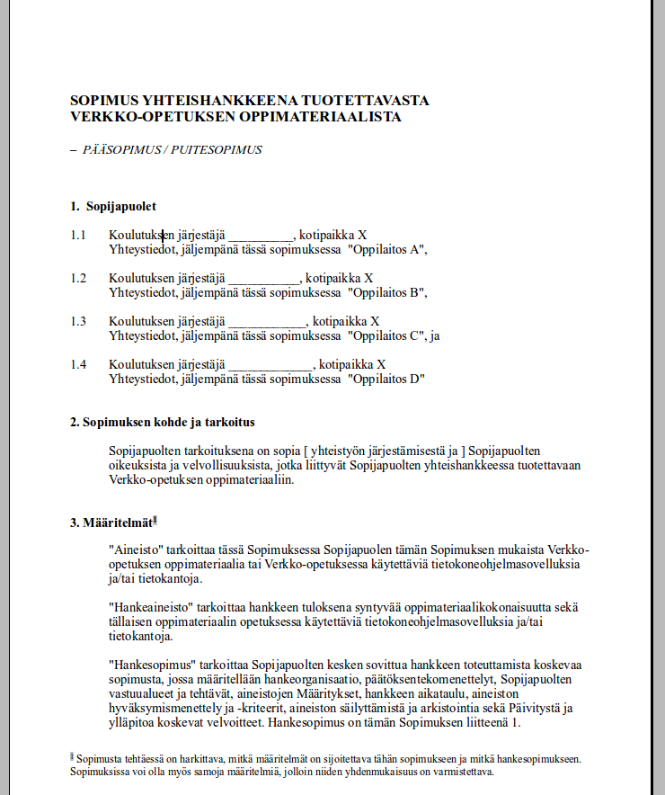

MVKS47 Käännösteknologian harjoituskurssi 2015 - 2016
30.10.2015
Kurssin tärkeimmät teemat
- Trados käännösohjelmistona muiden joukossa
- Miten käännösmuisti toimii?
- Termipankit kääntäjän apuna
- Mitä muita resursseja on?
- Miten niitä tehdään?
- Projektit Tradosissa
- Doc, ppt, html, pdf...
- Muuta?
Kurssin aikataulu
- pe 30.10. Trados käännöstyökaluna
- ma 2.11. Asennus + teoriaa muisteista
- pe 6.11
- ma 9.11.
- pe 13.11
- ma 16.11.
- pe 20.11
- ma 23.11.
- pe 27.11 Ei tuntia
- ma 30.11.
- pe 4.12
- ma 7.12.
- pe 11.12.
- ma 14.12.
- pe 18.12.
Käännösmuisteista ja käännösohjelmistoista
Määritelmiä
2. käännösohjelma \(\ne\) käännösmuisti
Käännösohjelmat
Käyttöliittymiä, jotka
kommunikoivat käännösmuistien kanssa
segmentoivat tekstejä käännettäviksi palasiksi
tuottavat kohdekielisen dokumentin automaattisesti muotoiltuna
pitävät huolta esim. tägien vastaavuudesta
Käännösmuistit
Tietokantamuodossa (ohjelman sisäinen käyttö)
XML-tiedostoina (jako + ohjelmistoista riippumaton kommunikointi)
<?xml version="1.0" encoding="utf-8" ?>
<!DOCTYPE tmx SYSTEM "tmx14.dtd">
<tmx version="1.4">
<header
creationtool="LF Aligner"
creationtoolversion="3.11"
datatype="unknown"
segtype="sentence"
adminlang="FI"
srclang="RU"
o-tmf="TW4Win 2.0 Format"
>
</header>
<body>
<tu creationdate="20150212T140830Z" creationid="jh">
<tuv xml:lang="RU"><seg>Уважаемый господин мэр,</seg></tuv>
<tuv xml:lang="FI"><seg>Arvoisa kaupunginjohtaja,</seg></tuv>
</tu>
<tu creationdate="20150212T140830Z" creationid="jh">
<tuv xml:lang="RU"><seg>Ой, как мы все любим памяти переводов!</seg></tuv>
<tuv xml:lang="FI"><seg>Voi kuinka me kaikki tykätään käännösmuisteista!</seg></tuv>
</tu>
Käyttöliittymien perusperiaatteita
- Aikaisemmin: word-integroituja (ks. WordFast classic)
- Nykyisin useimmat standalone / studio -mutoisia
Esimerkki: MemoQ
Palvelimella vai paikallisesti?

Sovellettavuus ja soveltumattomuus



työskentely-ympäristönä?
Mistä minulle?
- In-house-kääntäjäksi
- Freelance-version hankkiminen (Trados: 695€)
- Omat viritelmät (OmegaT, WF anywhere?) (0€)
- Väliaikainen projektikohtainen lisenssi (0€)
Tämäkin esitys moodlessa.